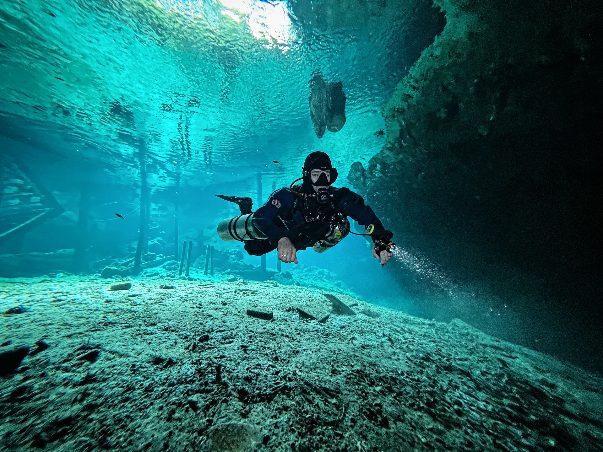
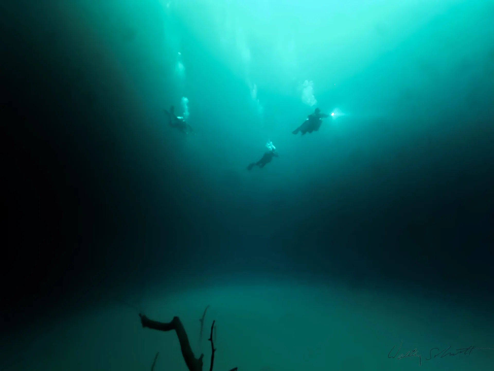

A world beneath
the jungle.
Guided cenote cavern diving in the Riviera Maya. Two dives, from 2,600 MXN.
Light. Limestone.
Something unforgettable.
Discover the cenotes with a guide who gets to know you first.
Choose from ten published combinations. Minimum Open Water certification and age 15 apply to cavern trips; site choice depends on your experience, conditions and availability.
Plan a cenote dayFind your combination.
| Experience | Details | Published rate |
|---|---|---|
| Chac Mool & Kukulkan | 2 dives | 2,600 MXN |
| Chikin Ha | 2 dives | 2,600 MXN |
| Ponderosa (El Eden) & Tajma Ha | 2 dives | 2,750 MXN |
| Dos Ojos (Barbie Line & Bat Cave) | 2 dives | 3,000 MXN |
| Dreamgate (Upstream & Downstream) | 2 dives | 3,000 MXN |
| Taak Bi Ha & Taak Bi Luum | 2 dives | 3,000 MXN |
| El Pit & Nicte Ha | 2 dives | 3,000 MXN |
| Nohoch Nah Chich | 2 dives | 3,000 MXN |
| Angelita & Carwash OR Casa Cenote | 2 dives | 3,300 MXN |
| Zapote (Hell’s Bells) & Maravilla (Kin Ha.) | 2 dives | 3,300 MXN |
Rates are per published two-dive combination. Entrance fees, camera permits and tips are additional. Confirm gear and the full cost before booking.



Before you
head underground.
Do I need certification for a cenote dive?
For guided cavern excursions, Devocean requires at least Open Water certification and a minimum age of 15. Bring your certification card. Cave diving beyond the light zone requires separate cave training and certification.
How big are the groups?
Cavern groups are limited to four divers per guide. Private guiding can also be arranged. Site selection is discussed with your guide and depends on experience, conditions and availability.
Where do we meet?
We coordinate a meeting point before your trip. For cenote trips, the published booking terms specify meeting points along the Playa del Carmen–Tulum route rather than hotel pickup. Confirm arrangements for your chosen activity.
Can I bring a camera?
Tell us beforehand. Rules and permit charges differ between cenotes, and some sites restrict cameras. A professional photo session can also be arranged.
Your next chapter
starts underwater.
Tell us when you’re visiting and what you’d love to discover.
We’ll help you find the right dive.